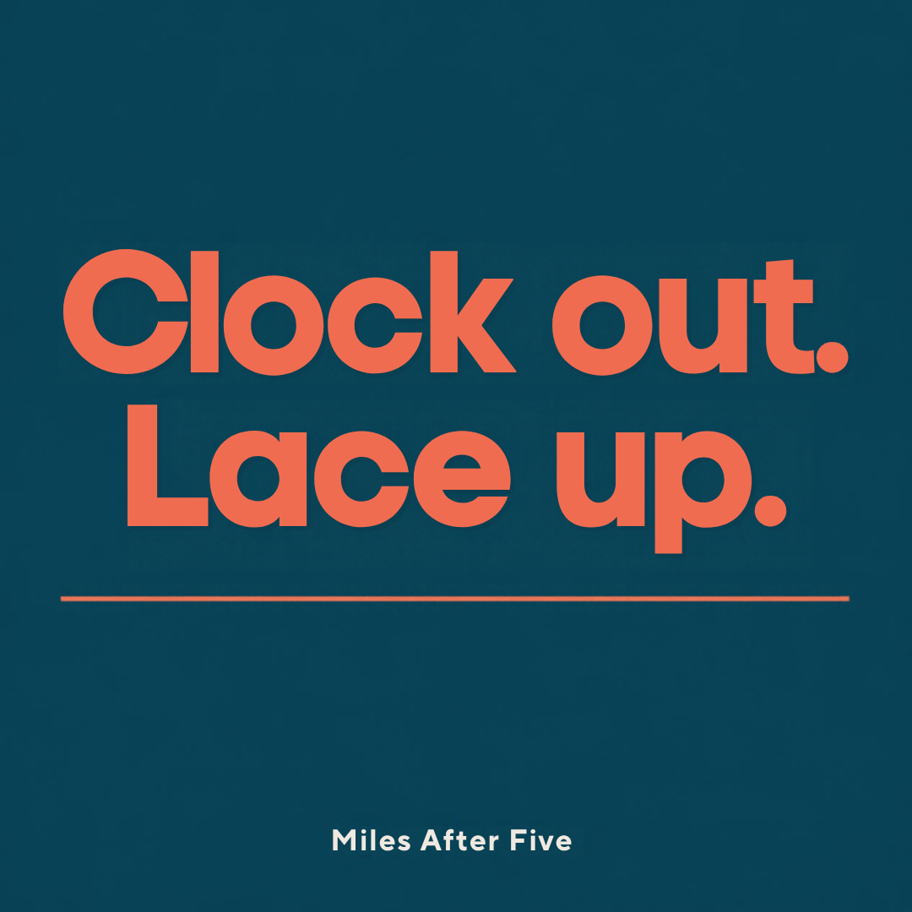

Social run club · After work
Clock out. Lace up.
Miles After Five is a social run club for people who want to get their miles in, meet new people, and have something to look forward to after work.
We run together, explore the city, and stick around after to get to know each other. Speed isn't the point. Your pace is your own, and first-timers are always welcome.

Our mission
One place for everything happening in running
We want every runner, at every pace, to feel ready, motivated and part of something. So we've put upcoming races, new gear, running tips and a beginner training plan in one spot, so you can spend less time searching and more time running with friends.
Active
We always point you toward getting out and moving together, whether that's a weeknight run or your first race.
Motivational
We welcome you, not pressure you. No comparisons, no "keep up." We'll meet you at mile one.
Fun
The run is a reason to hang out, and the social side is half the point. Came for the miles, stayed for the company.
How it works
From clock-out to finish line
- Stop 1 Clock out, find a race Pick your state and see what's coming up near you.
- Stop 2 Grab a friend Find a pace you can chat at. Your pace is your own.
- Stop 3 Train together Our 8-week beginner plan gets you to your first 5K.
- Stop 4 Race day Cheer each other in. Came for the miles, stayed for the company.
The community
“Never run with a group? New in town? Free after work? Then you're one of us.”
Miles After Five is for 21 to 35-year-olds who want to stay active, meet people and have plans after five. Come solo or bring a friend. Run or walk. However you get there, you belong here.
Explore
Get race-ready with us
Race Locator →
Pick your state and see the upcoming races near you.
Race Calendar →
Every upcoming race we've listed, in date order.
New Gear Drops →
The latest running shoes from our weekly gear drops, side by side.
Running Tips →
Practical tips for race prep, your runs and the days after.
Training Programs →
A beginner-friendly 8-week plan to your first 5K, at your own pace.
See you after five! →
Pick a race, grab a friend and make a plan.